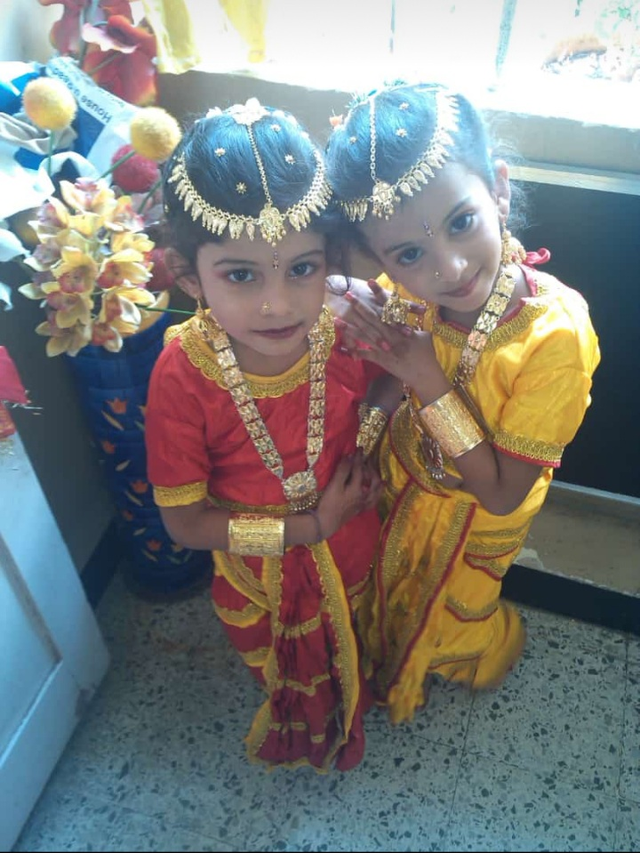
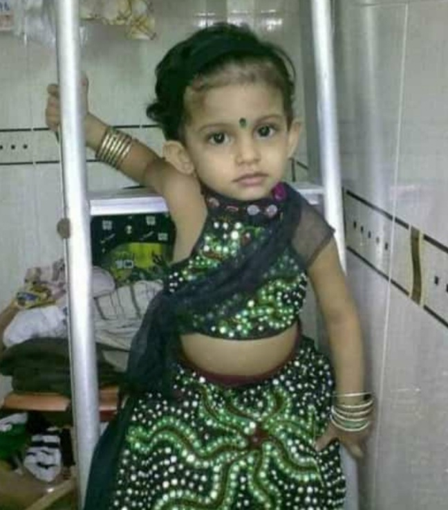
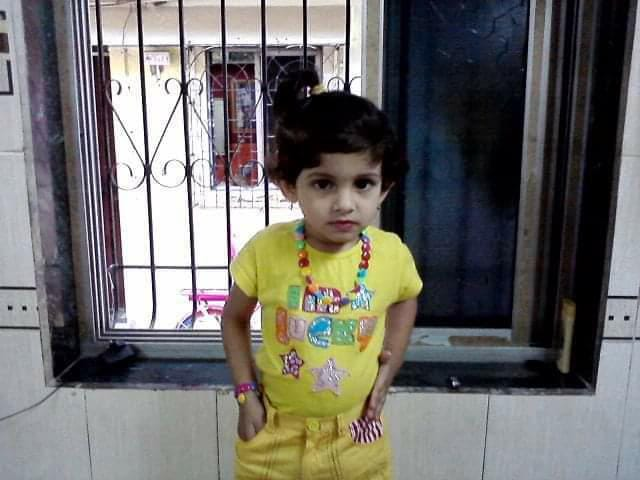
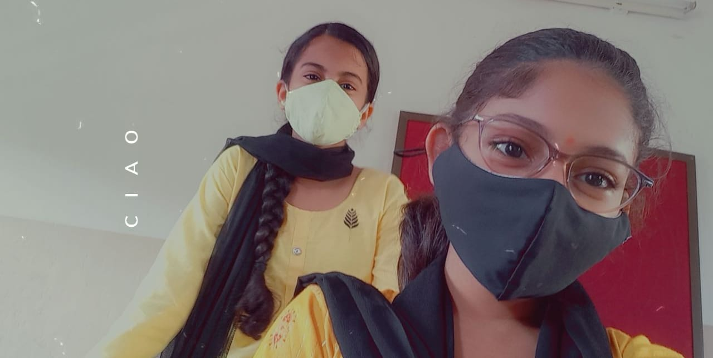
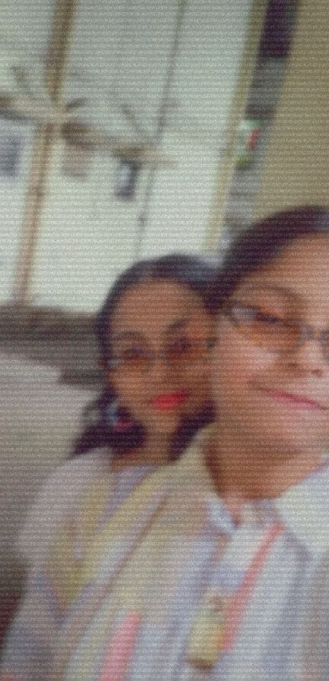
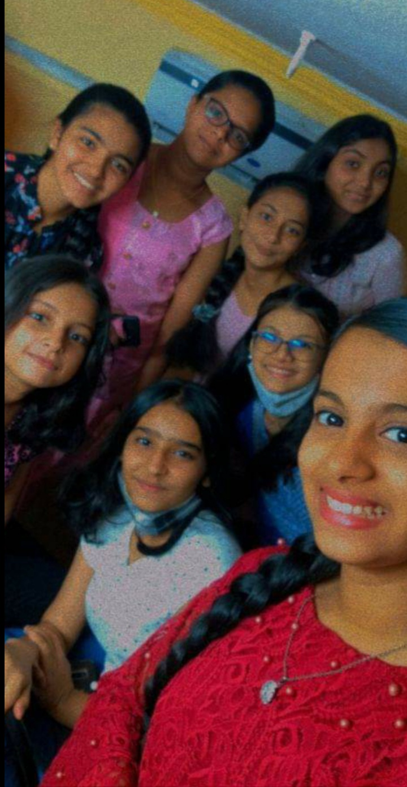
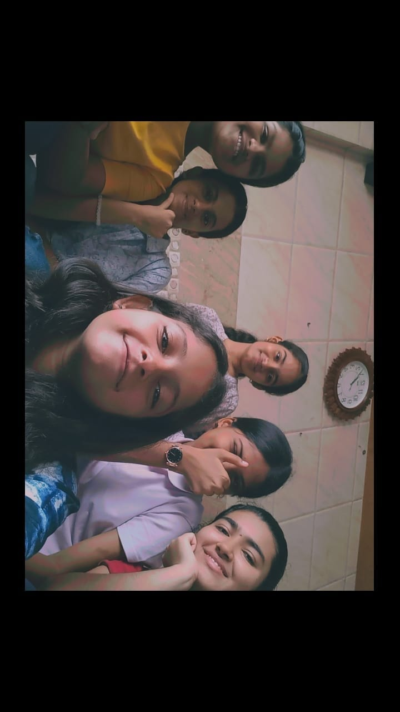
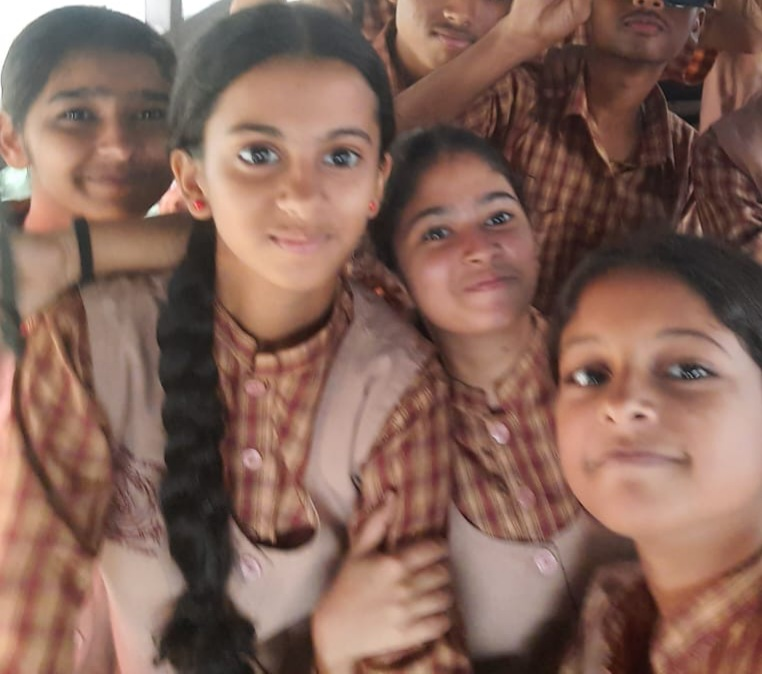
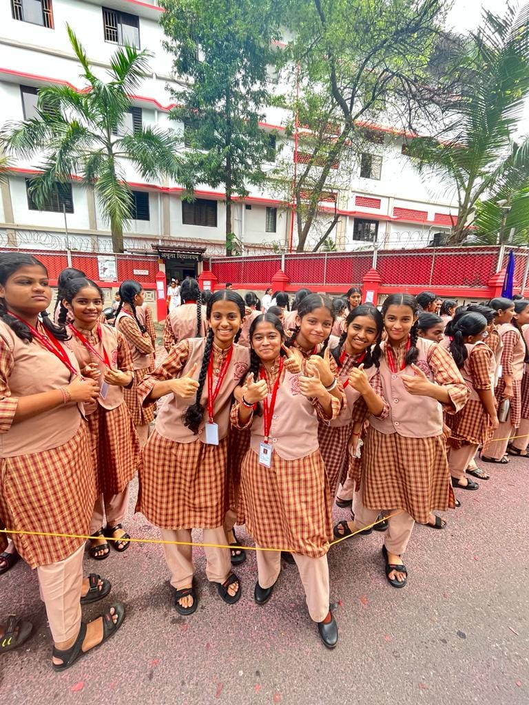
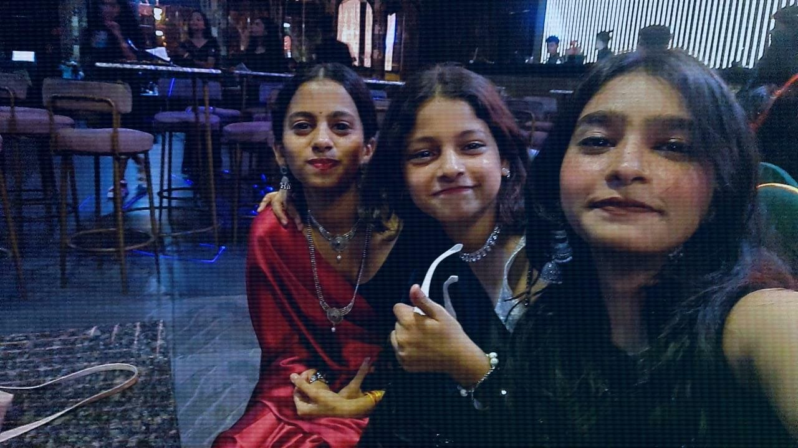

OUR STORY
Some memories
never get old.
We may not have pictures of every year, but we have a story worth remembering.

CHAPTER 01 · NURSERY
Where it all began.
Two little girls, an annual day performance, and absolutely no idea how many years of friendship were waiting ahead.I still remember your mother was doing our makeup lol.


CHAPTER 02 · THE LITTLE YEARS
A little Arya.
A little childhood, a little chaos, and a friendship that was just getting started.

CHAPTER 03 · EIGHTH STANDARD
We found our way back.
After lockdown, school finally reopened. We met again, sat together, and started making up for the time apart.I still remember eating stuff in front of Ellora.

CHAPTER 04 · A BIRTHDAY
You came anyway.
You were in a hurry, but you still came to my birthday with a cake your mom made. I don't think you know how much that meant.

CHAPTER 05 · NINTH STANDARD
Another little chapter.
San Academy, new memories, and another year of growing up together and tumchi faltu giri you asked sanket weird question.

CHAPTER 06 · DANCE PRACTICE
Our dance era.
Practising at your house, preparing to perform in front of the class, and taking it ajjebat serious nhi.

CHAPTER 07 · THE PICNIC
A day outside school.
One of those ordinary days that somehow became a memory worth keeping.

CHAPTER 08 · THE RALLY
The rope incident.
Lol do you remember aapan rope khechleli ani Gaurav ani sir kiti ragavlele kiti crazy chaos.

CHAPTER 09 · FAREWELL
Look how far we've come.
From nursery kids to standing together at farewell. If only our little selves knew what was waiting for us.
AND NOW...
You're 18.
We don't have pictures of every year. We don't remember every little thing. But somehow, we made it from nursery to here.
And I'm so glad I got to grow up with you.
ONE LAST THING
A little message for you.
I couldn't be there in person, but I wanted you to have this.